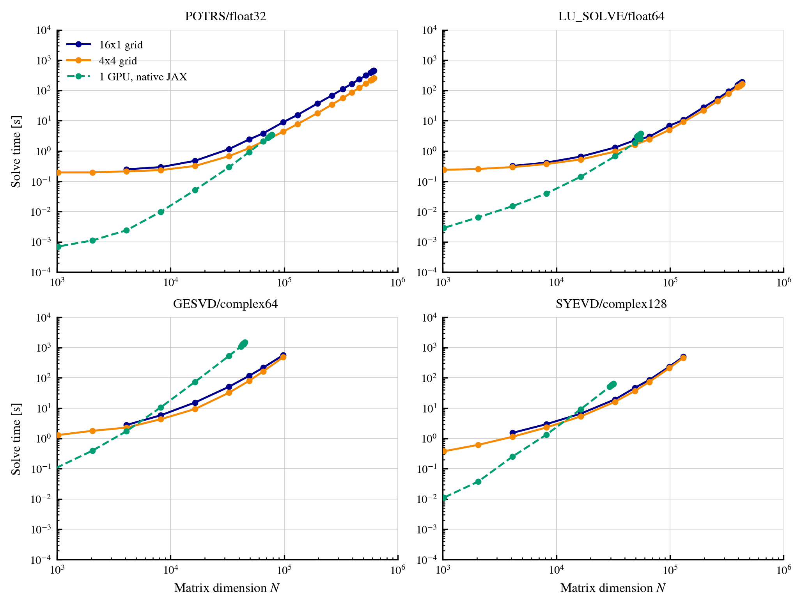
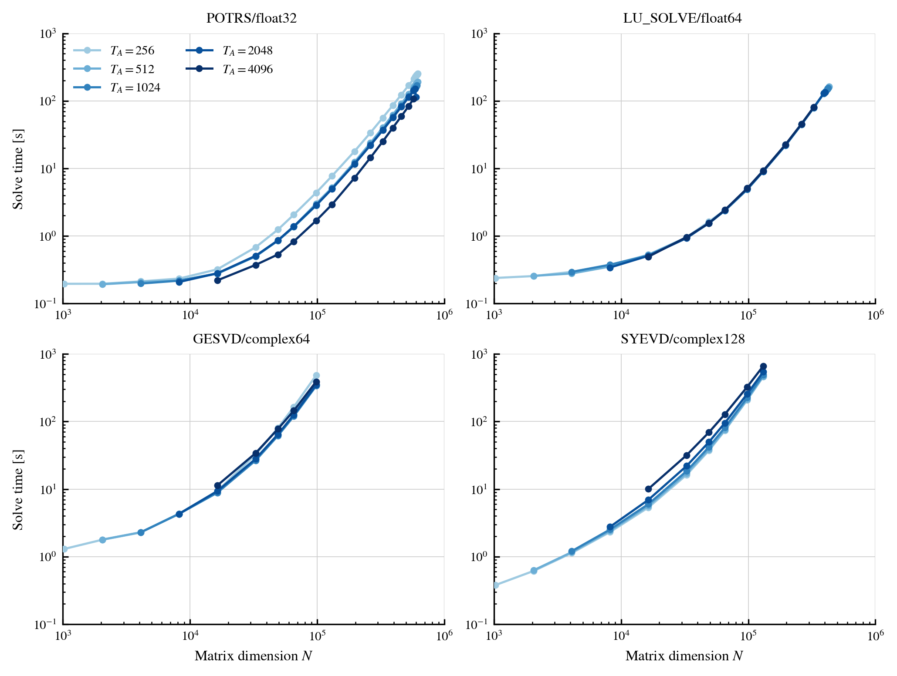

Performance and scaling¤
This page presents the performance and scaling of JAXMg across multiple GPUs and compute nodes. Performance in distributed matrix routines depends not only on the available GPU resources, but also on how the calculation is divided between them. We therefore examine the two principal configuration choices available in JAXMg: the process-grid layout and the matrix tile dimension, \(T_A\).
The results provide practical guidance for configuring JAXMg, rather than hardware-independent performance guarantees. Complete benchmark scripts and results are available in the JAXMg benchmark repository.
Benchmark configuration¤
We consider four representative combinations of routine and data type:
potrswithfloat32;lu_solvewithfloat64;gesvdwithcomplex64;syevdwithcomplex128.
For potrs, lu_solve, and syevd, the input is the diagonal matrix
\(A=\operatorname{diag}(1,\ldots,N)\). The two linear solves additionally use
\(b=(1,\ldots,1)^\mathsf{T}\). For gesvd, the input is a random Gaussian
matrix with zero mean and unit variance.
Both configuration studies use 16 NVIDIA H100 SXM5 GPUs, each with 94 GB of memory, across four nodes. Each node contains four GPUs connected by NVLink and four 400 Gb/s InfiniBand links for inter-node communication.
Process-grid layout¤
The first benchmark compares a one-dimensional \(16\times1\) process grid with a two-dimensional \(4\times4\) grid at a fixed tile dimension \(T_A=256\).


Under the 2D block-cyclic redistribution, moving from the \(16\times1\) to the \(4\times4\) grid introduces a second inter-rank redistribution phase, but provides a more balanced distribution during cuSOLVERMp execution. The process-grid layout therefore determines the balance between redistribution overhead and distributed solver efficiency.
Across every routine, the solver-side benefit outweighs the additional
communication. Over matrix dimensions completed by both layouts, the
\(4\times4\) grid achieves geometric-mean speed-ups of \(1.77\times\) for
potrs, \(1.23\times\) for lu_solve, \(1.38\times\) for gesvd, and
\(1.21\times\) for syevd relative to the \(16\times1\) grid.
The smaller maximum matrix dimensions reached by gesvd and syevd reflect
the substantially larger cuSOLVERMp workspaces required by these
decompositions. At sufficiently large \(N\), both distributed layouts also
outperform the corresponding native single-GPU JAX implementation. The
computational benefit of distributed execution therefore exceeds its
redistribution overhead before single-GPU memory becomes limiting.
Tile dimension¤
Having established the performance advantage of the \(4\times4\) process grid, we next hold this layout fixed and vary \(T_A\) from 256 to 4096.


The response is strongly routine-dependent. Increasing \(T_A\) reduces the
runtime of potrs, leaves lu_solve broadly unchanged, and increases the
runtime of syevd. The gesvd response is non-monotonic, with the shortest
runtime at the intermediate value \(T_A=1024\) and slower execution for both
smaller and larger tiles. Tile selection should therefore be benchmarked for
the routine and matrix sizes of interest while also satisfying the
no-padding condition.
Large-scale execution¤
To demonstrate the larger scaling limit, we ran JAXMg on 64 NVIDIA H200 SXM5 GPUs, each with 143 GB of memory, across eight nodes. Each node contained eight NVLink-connected GPUs and eight 400 Gb/s InfiniBand links.
Using an \(8\times8\) process grid and \(T_A=1024\), JAXMg completed a Cholesky solve with \(N=1{,}499{,}136\). The distributed matrix occupied 8.2 TiB in aggregate, while each local shard and its redistribution scratch used 94.7% of the available device memory. The warm solve completed in 654 seconds.
At \(N=1{,}310{,}720\), the largest dimension completed by both tested layouts, the \(8\times8\) grid was \(6.8\times\) faster than the \(64\times1\) grid: 452 seconds compared with 3065 seconds. The balanced grid both reduces the redistribution scratch required for a fixed tile dimension and distributes the solver computation more evenly.